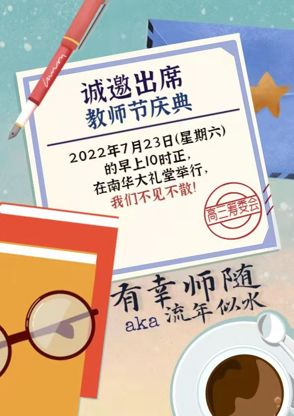
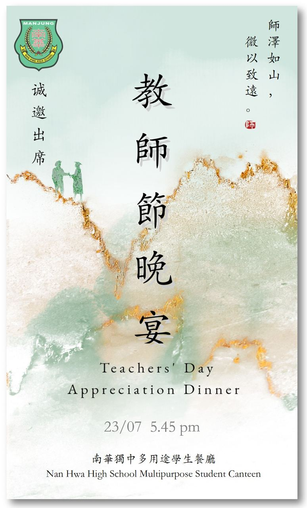

致：
致：
受邀嘉宾、董事、家联、校友会、全体教师及学生
为了欢庆教师节，特此订于7月23日（星期六）举办教师节庆典及教师节晚宴，敬请准时出席。
【教师节庆典】
日期：7月23日（星期六）
时间：早上10点正
地点：南华独中礼堂
主题：有幸师随 AKA 流年似水
【教师节晚宴】
日期：7月23日（星期六）
时间：下午5点45分
地点：南华独中多用途学生餐厅
主题：师泽如山，微以致远
#教师节庆典 #有幸师随 #流年似水
#教师节晚宴 #师泽如山 #微以致远
#南华独中 #曼绒 #实兆远

